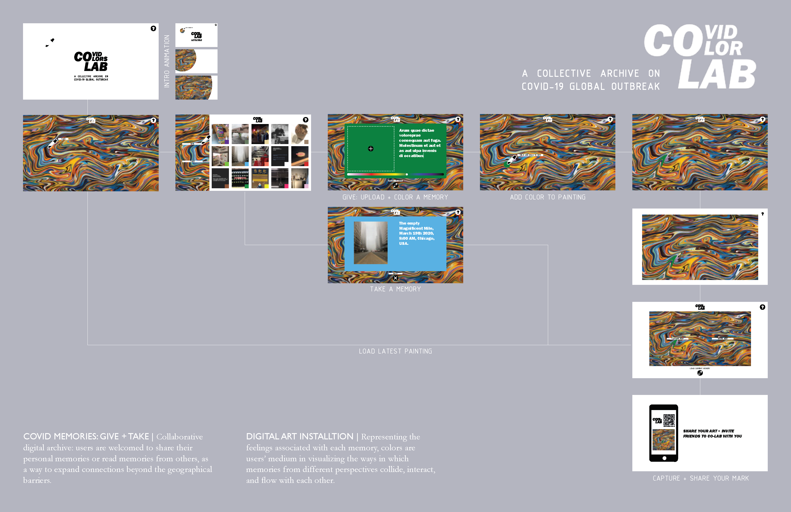

COVID COLOR LAB.00
Comprised of an interactive digital archive and an immersive installation, CoLab envisions a new form of interpersonal bonds and connections at a time of crisis. Over the course of a year, we will invite users to share photography, videos, or writings as a snapshot of their life during the pandemic. With each upload to the website, the user could choose and scatter a drop of color into a painting on water, which appears as the archive’s interface. This drop will then merge, swirl, and interact with existing colors, renewing the painting with a tint of unexpectedness and wonder.

